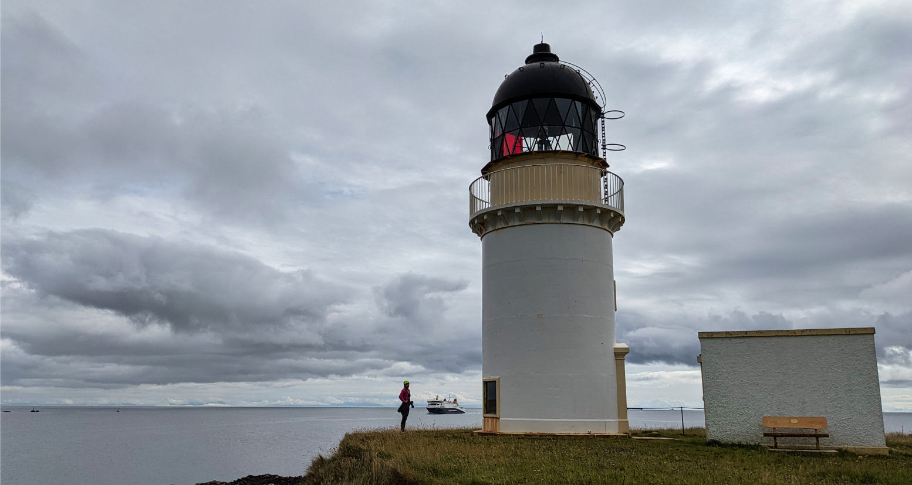

Stornoway is the capital of Lewis, one of the Western Isles or Outer Hybridees. We spend two weekends there this season, on both occasions we would drive to the ferry and take our tandem bicycle across.
It’s always so fun to pack our tandem bicycle for a little overnight adventure, it reminds us of the good old days when we took a year off to bike around the American continent with the tandem.
The ferry on Friday arrives late in Stornoway. The first weekend we found a nice spot on a campground. We couldn’t remember the last time we actually stayed on a campground, but since we weren’t really going anywhere it would make it easy to leave the tent for the night and not have to pack and unpack for no reason.
Saturday morning started somewhat sunny. Annette went for a run, after which we were going to bike to the lighthouse. Unfortunately, it started raining (not forecasted), and never stopped. We kept on reminding ourselves and each other that it wasn’t that bad and that it fit the landscape quite well.. So, we kept at it, and managed to find the lighthouse through the low hanging clouds. Atmittandly, lighthouses are usually at the end of the end of the end of the last road, so somewhat hard to mis, but still.


On the way back there was a standing stone and a 6000 year old chambered cairn to visit, and by the time we got back to the tent it was somewhat dry.
Sunday's weather proved to be a lot nicer (dry!). Nothing was open in Stornoway as is the habit on the Western Isles, but we found one bakery somewhere in the middle of a housing area that was open and got some nice treats to start our day.
We biked to another lighthouse, through the castle grounds. This one is close to the ferry and has some WWII defence bunkers nearby. We saw our ferry coming in when we were at the lighthouse, and had to race back to be at the ferry dock in time to take it back to Ullapool. No worries, no flat tire, we managed.

”Every negative has it's positive'' was also very true on this trip, the rainy weather made for beautiful skies on the drive back home!>

The second weekend the Friday ferry arrived even later, as it had to wait outside the harbour for a freight ship to depart. It was now October and already dark, and we still had an hour to bike in the rain to our yurt that we rented on airbnb for the weekend. The place was amazing and warmed up by our host, so we settled quickly and were grateful to not be huddled in a tent. >
Overnight the wind picked up to a proper storm. We were anticipating having to take the bus, but we just managed to use the bike to go around. The ferry was cancelled and fishing boats were staying in the harbour. We had some fresh eggs for breakfast that we picked from the chicken pen ourselves in the morning, and went about our day. >
The rain had stopped some time in the night, and our yurt hadn’t blown away (though it sounded a couple of times like it would), and so it was time to explore the village where we were staying through a Sunday morning run. Beautiful views all the way. >
This post is going to end with a sad story. Stornoway, as being an island, has had many ships going under over the years. Perhaps none is so tragic as the story of Sheol Nan Iolaire. This ship left Scotland mainland on 31 December 1918 to arrive in the Stornoway harbour 1th January 1919, returning 280 men to their homes and families after having fought in WWI. Within sight of the harbour it hit a rock and went down resulting in the loss of 205 men. To commemorate this enormous loss, there are several memorials for this event, among which one that I found so well suited and different that I thought I'd share. In the Stornoway harbour between piers 1 and 2 there is a beach drying up at low tide. An artist has made the ship come home to the harbour by hammering 280 wooden poles in the beach that form the real outline of the ship. Every time the water retreats after high tide the boat becomes visible, and it disappears again at high tide, back to its final resting place. Each of the 280 poles stand for 1 men. The poles are lit up at night, blue for the non-survivors, red for the survivors.